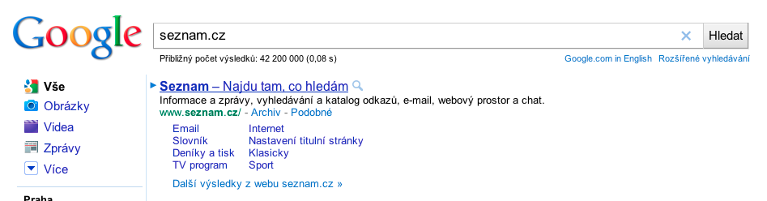
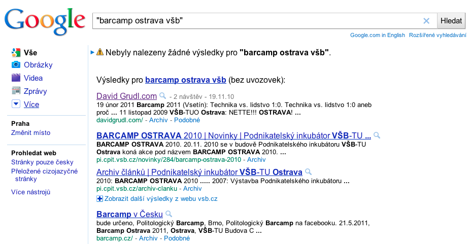
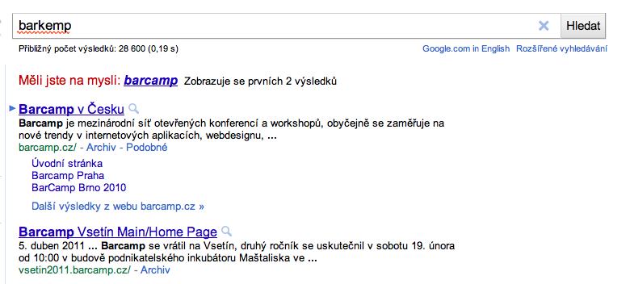

Sémantický web
a Google
Filip Hráček
4. říjen, 2011

Everything is OUR problem.
Problém:
Uživatel nezná rozdíl mezi search bar a address bar

Problém:
Uživatel nezná funkci uvozovek v hledání

Problém:
Uživatel píše moc pomalu (a neumí zmáčknout Enter)


Problém:
Uživatel neví, jak se to píše

Problém:
Uživatel neumí cizí jazyk


Problém:
Na webu není dostatek relevantního obsahu


Problém:
Uživatel chce spáchat sebevraždu

Problém:
Uživatel chce používat webové vyhledávání na vše, jen ne na hledání na webu


WTF is Semantic Web?
Sémantický web dává věcem význam

Sémantický web — historie
- Memex (1945, Vannevar Bush)
- Project Xanadu (1960s, Ted Nelson)
- World Wide Web (1990s, Tim Berners-Lee)
- ... a pořád nic.
Tři přístupy k sémantickému webu
- General data extraction
- High recall, low precision
- When it works, it's amazing. But it's hard to get it to work.
- Powers fact extraction, search tools
- Structured data markup
- Encourage webmasters to encode semantic labels in their web pages
- Use open standards like Microdata/HTML5, Microformats, RDFa
- Data is available to anyone, helps spur innovation across the web
- Medium recall, medium to high precision
- Powers rich snippets
- Feeds
- Ideal for rapidly changing data
- Risk that data can go out of sync with the corresponding web page
- Low recall, medium to high precision, fresh data updates
Proč bych měl chtít, aby vyhledávače rozuměli mému obsahu
Rich snippets


Jak docílím toho, aby vyhledávače rozuměli mému obsahu
Sémantický web je o trojicích: triples

Příklad:

Problém: Jak definovat formát?
- Microformats
- Microdata
- RDFa
Problém: Jak definovat slovník?
- FOAF
- GoodRelations
- ...
Schema.org
Schema.org
<div> <h1>Avatar</h1> <span>Director: James Cameron (born August 16, 1954)</span> <span>Science fiction</span> <a href="../movies/avatar-trailer.html">Trailer</a> </div>
Schema.org — itemscope
<div itemscope> <h1>Avatar</h1> <span>Director: James Cameron (born August 16, 1954) </span> <span>Science fiction</span> <a href="../movies/avatar-trailer.html">Trailer</a> </div>
Schema.org — itemtype
<div itemscope itemtype="http://schema.org/Movie"> <h1>Avatar</h1> <span>Director: James Cameron (born August 16, 1954) </span> <span>Science fiction</span> <a href="../movies/avatar-trailer.html">Trailer</a> </div>
Schema.org — itemprop
<div itemscope itemtype ="http://schema.org/Movie"> <h1 itemprop="name">Avatar</h1> <span>Director: <span itemprop="director">James Cameron</span> (born August 16, 1954)</span> <span itemprop="genre">Science fiction</span> <a href="../movies/avatar-trailer.html" itemprop="trailer">Trailer</a> </div>
Schema.org — embedování
<div itemscope itemtype ="http://schema.org/Movie"> <h1 itemprop="name"&g;Avatar</h1> <div itemprop="director" itemscope itemtype="http://schema.org/Person"> Director: <span itemprop="name">James Cameron</span> (born <span itemprop="birthDate">August 16, 1954</span>) </div> <span itemprop="genre">Science fiction</span> <a href="../movies/avatar-trailer.html" itemprop="trailer">Trailer</a> </div>